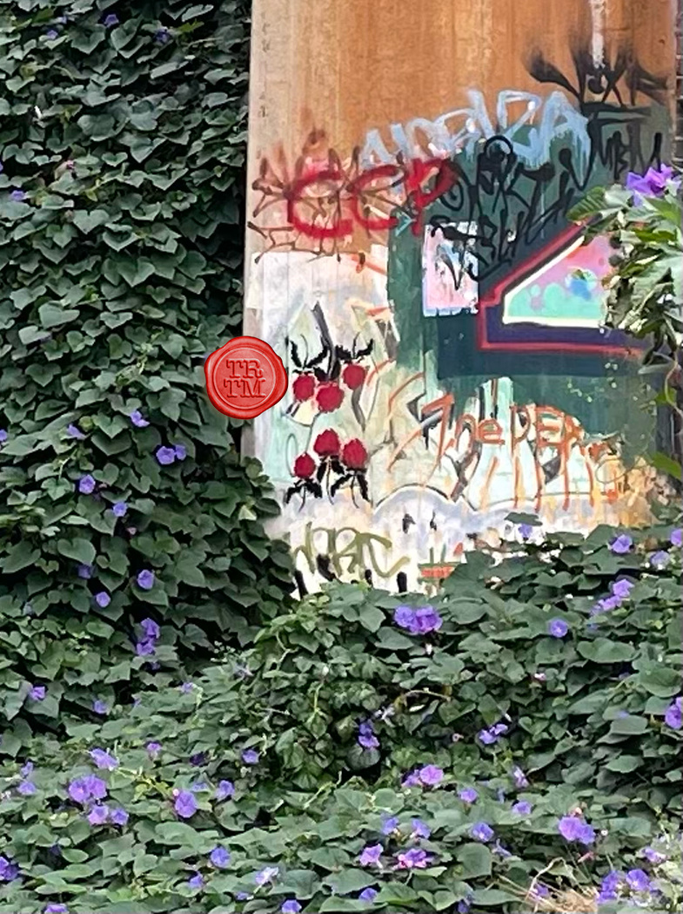

Good to see you again, here is your clue to where you can find your next task.
You have 3 days.

Finding your task will get you points.
Day 1 = 3 points, Day 2 = 2 points, Day 3 = 1 Point.
There will be a new clue added each day.
Good Luck, TM.